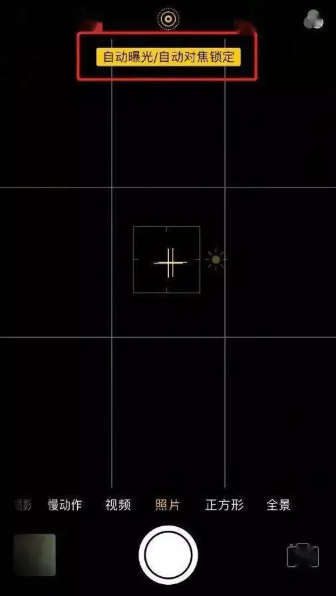
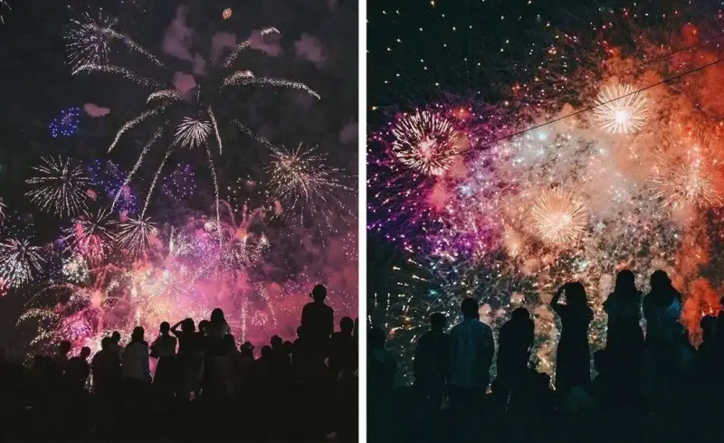
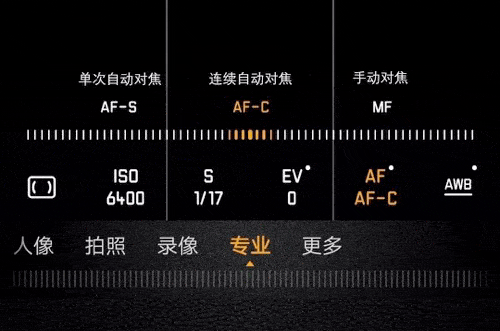
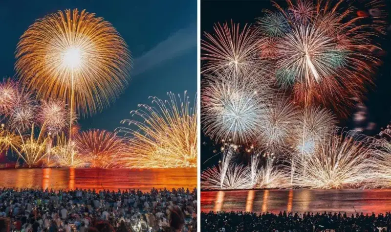

Published: 2023-01-23
Source link: https://www.cnphotos.net/academy/show-109.html
The New Year is not complete without fireworks and firecrackers. Today let us talk about how to shoot good fireworks photos.
First, whether you use a phone or a camera, you need a tripod. If you can, also get a remote shutter release.
Shooting fireworks with a phone
1. Turn off the phone's HDR and flash.
2. Use exposure lock.
The whole fireworks show is very fast, and the sky is very dark. If you slowly focus every time, you will run out of time, and the photos will blur. So use exposure lock when you shoot. It is much easier, and the photos look good.

▲ The phone's exposure lock

Many mainstream phones now have pro mode, night mode, and more. Get ready and just shoot.
▼
Phone pro mode
You can adjust ISO, shutter speed, and other settings to shoot.

Shooting fireworks with a camera
Because the setting and the weather change, the exact settings depend on the real conditions.
First, here is a simple range for a few settings.
Aperture: fireworks are like night scenes. Use a small aperture of F8 to F11 for a fairly sharp image.
Shutter: slow the shutter down. Set it to 1 to 5 seconds to record the trails of light.
ISO: use ISO 100 to 400. A low ISO prevents noise.
White balance: set it around 3000K, and adjust to the setting.

A word on shutter speed. Many think you should use a fast shutter to catch the instant a firework bursts. The truth is the opposite. The right way is to use a slow shutter.
If you shoot fireworks with a fast shutter, they look like this ▼
A slow shutter captures the trails of light ▼
▲ Shutter: 2.5s Aperture: f/14 ISO: 100
▲ Shutter: 7.5s Aperture: f/16 ISO: 100
▲ Shutter: 4.8s Aperture: f/11 ISO: 100
▲ Shutter: 12.1s Aperture: f/16 ISO: 100
▲ Shutter: 1.6s Aperture: f/10 ISO: 100
▲ Shutter: 1s Aperture: f/18 ISO: 100
▲ Shutter: 1s Aperture: f/18 ISO: 100
Fireworks are gone in an instant. So frame the shot before you press the shutter, get everything ready, and wait for the moment the firework bursts.